Angular.js with Drupal 8


<formio> provides developers an easy drag & drop interface that creates both forms and the REST API's in one step!
You build the app, we handle the Form I/O.
Presentation Materials
Why Angular?
Let's look at how the web has evolved.
Web 1.0
The static web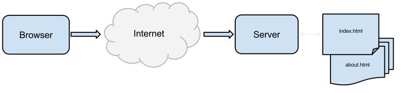
Web 2.0
The dynamic web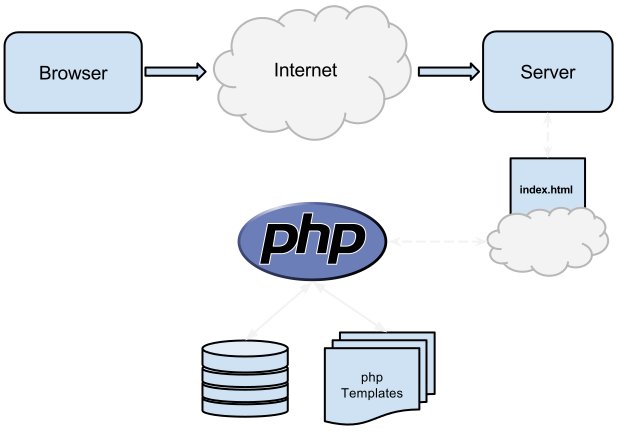
Web 2.0
Drupal and other CMS' proliferated
Web 3.0
The rise of the machinesWeb 3.0
The rise of the machines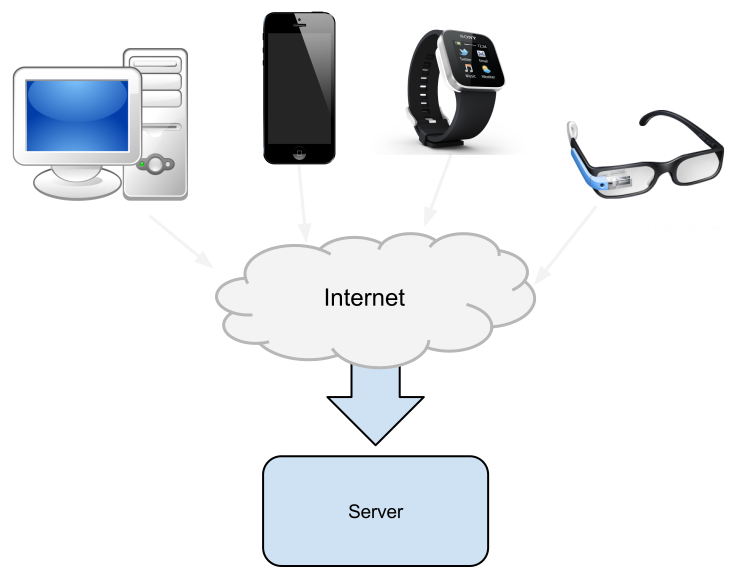
Web 3.0
Drupal 8 solves this problem 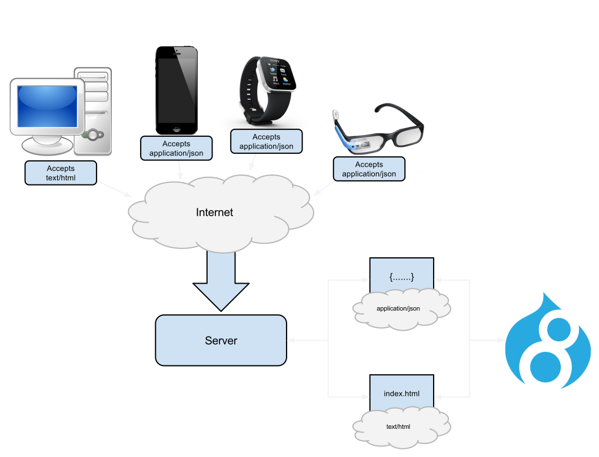Drupal as a Hub
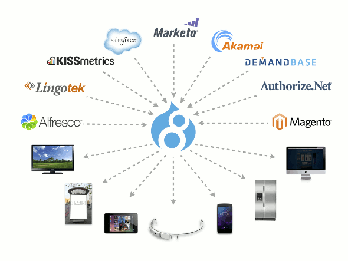Is this the right approach?
The Drupal "website"
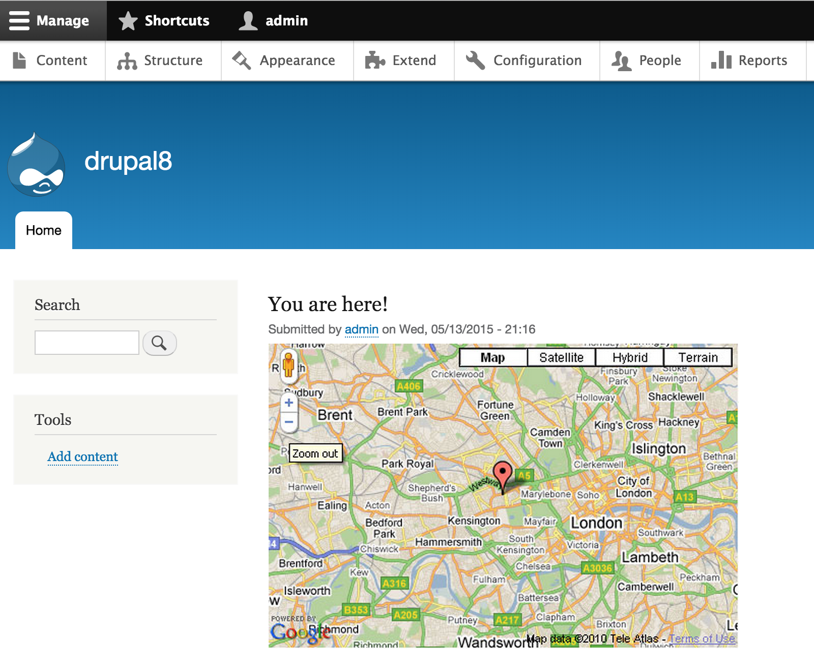The Drupal "web application"
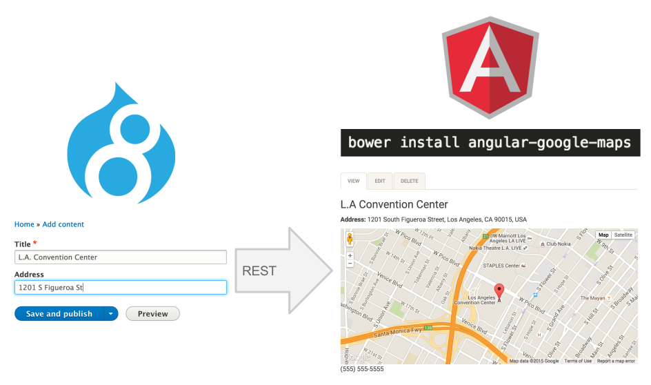Why Angular.js?
Forces us to develop our Drupal website like a web application.
A Modern Web Application
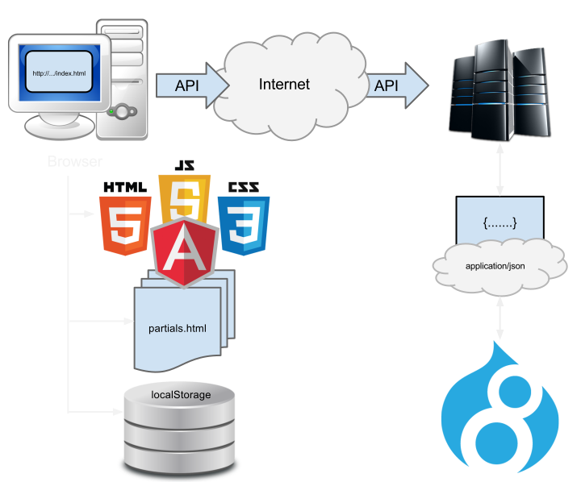It has been given a name...
"Headless Drupal"
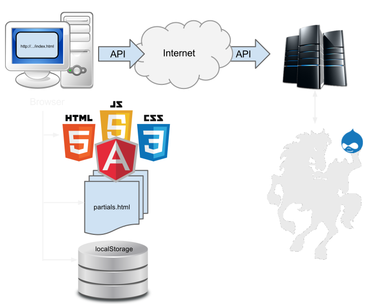The Future
Multi-Service Applications

"API-first" development
- Build your REST platform first.
- Your first "app" should be the API test.
- Build your app/website only using API's.
Let's build the future
Configure Drupal 8 for Web Services
Configure your server for CORS
/etc/apache2/sites-available/drupal8
Options Indexes FollowSymLinks MultiViews
AllowOverride All
Header set Access-Control-Allow-Origin "*"
Header set Access-Control-Allow-Credentials "true"
Header set Access-Control-Allow-Methods "GET, PUT, POST, DELETE, OPTIONS"
Header set Access-Control-Allow-Headers "DNT,X-Mx-ReqToken,Keep-Alive,User-Agent,X-Requested-With,If-Modified-Since,Cache-Control,Content-Type"
Order allow,deny
allow from all
Install Drupal 8
- Install Drupal by following https://api.drupal.org/api/drupal/core!INSTALL.txt/8
drush dl drupal --default-major=8 --select --all
Enable Web Services
/admin/modules
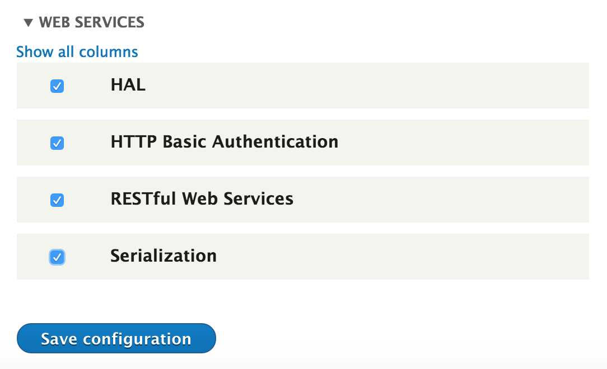
Create "Movie" content type
/admin/structure/types/add
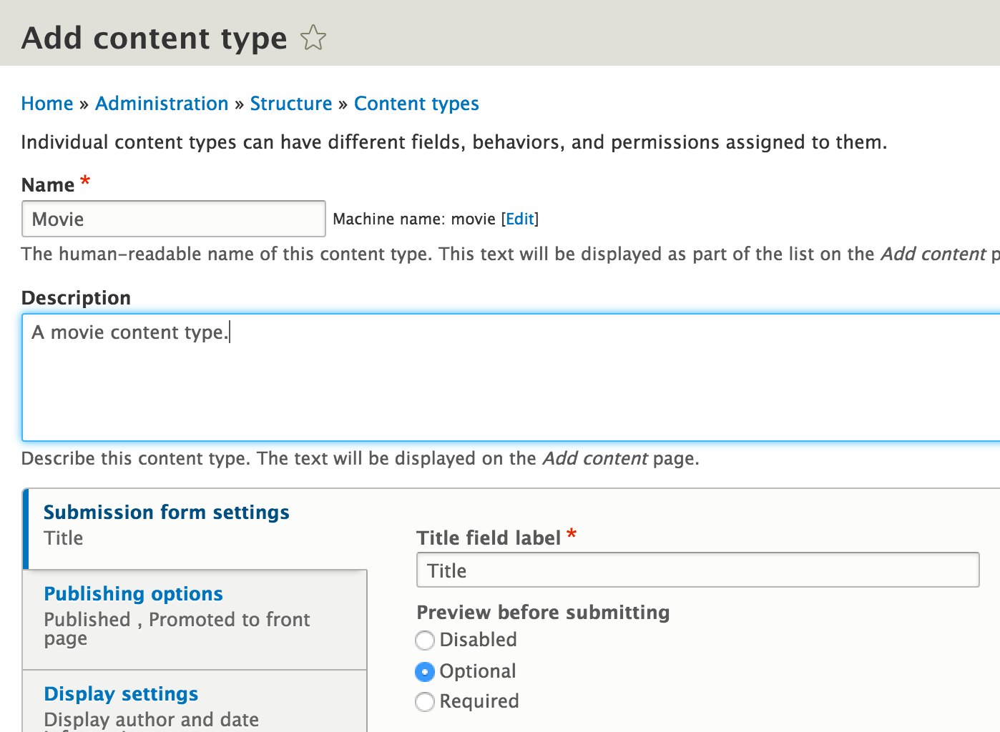
Add a YouTube Embed field
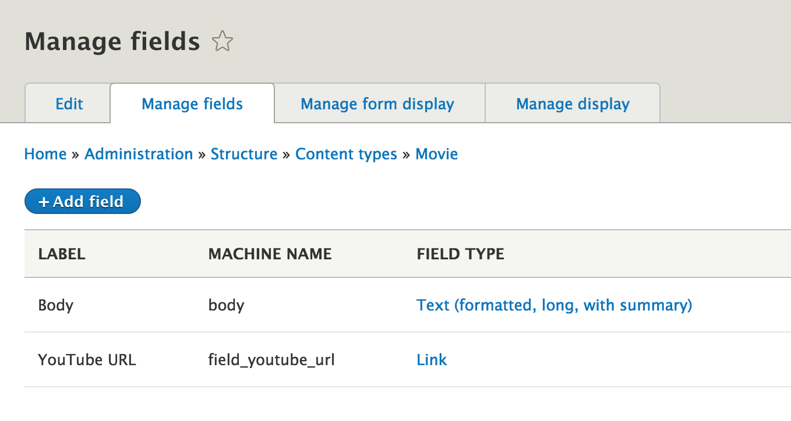Create a View
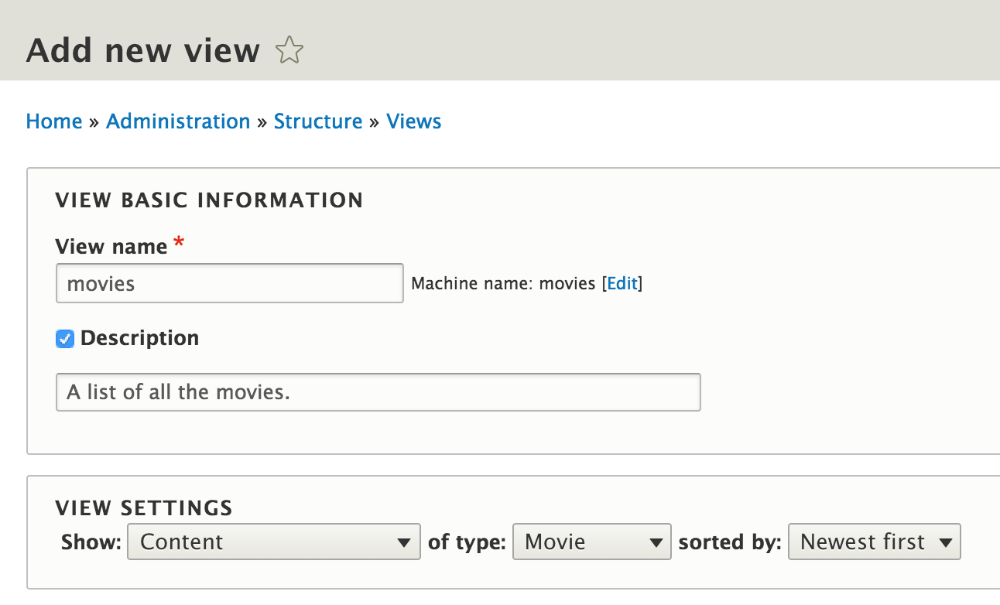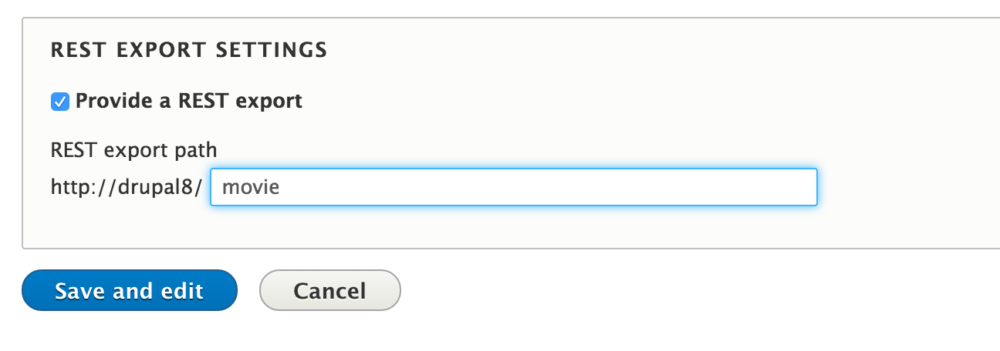
Add the format settings
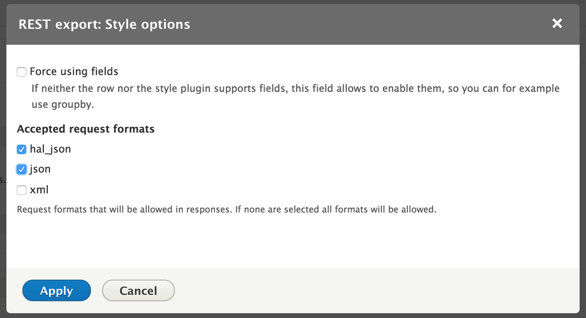Create the single movie page.
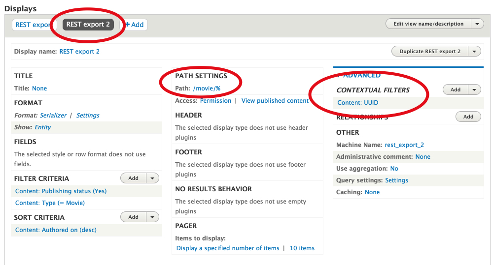The API is now live!
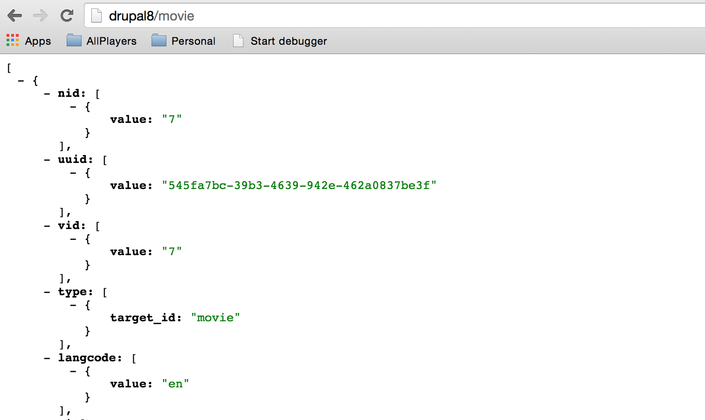Building the Client
in AngularJS
Bootstrapping the client with Yeoman
http://yeoman.io/
mkdir drupal-angularcd drupal-angularnpm install -g yonpm install -g generator-angularyo angular
Yeoman Installation
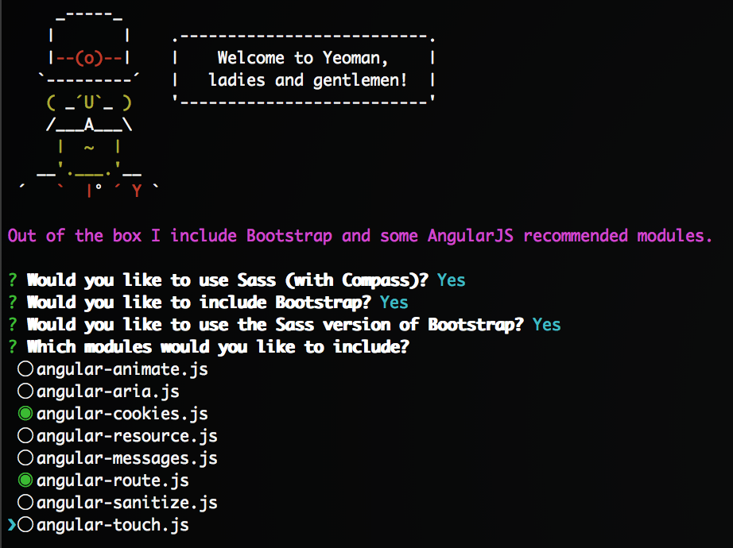Create a Base URL for application.
app/scripts/app.js
.run(function($rootScope) {
$rootScope.baseUrl = 'http://drupal8';
})
Generate the movies route
yo angular:route moviesAdd Movies to the navigation
app/index.html
app/scripts/controllers/movies.js
.controller('MoviesCtrl', function ($rootScope) {
$rootScope.activeNav = 'movies';
});
Create a table list of Movies
app/views/movies.html
Title
Video
{{ movie.title[0].value }}
{{ movie.field_youtube_url[0].uri }}
Add movies to the scope
app/scripts/controllers/movies.js
.controller('MoviesCtrl', function ($scope, $rootScope, $http) {
$rootScope.activeNav = 'movies';
$scope.movies = [];
$http.get($rootScope.baseUrl + '/movie').success(function(result) {
$scope.movies = result;
});
});

Create the Movie Page
yo angular:route movie-view --uri=movie/:id
app/views/movie-view.html
{{ movie.title[0].value }}
app/scripts/controllers/movie-add.js
.controller('MovieViewCtrl', function ($scope, $rootScope, $routeParams, $http) {
$scope.movie = {};
$http.get($rootScope.baseUrl + '/movie/' + $routeParams.id)
.success(function(result) {
$scope.movie = result[0];
}
);
});
Create the HTML filter
app/scripts/app.js
.filter('safe', function($sce) {
return function(html) {
return $sce.trustAsHtml(html);
};
})
Adding a YouTube Player directive
app/scripts/app.js.directive('youtube', function() { return { restrict: 'E', scope: { src: '=' }, templateUrl: 'views/youtube.html' }; }).filter('trusted', function ($sce) { return function(url) { return $sce.trustAsResourceUrl(url); }; });
Adding a YouTube Player directive
app/views/youtube.html
app/views/movie-view.html{{ movie.title[0].value }}